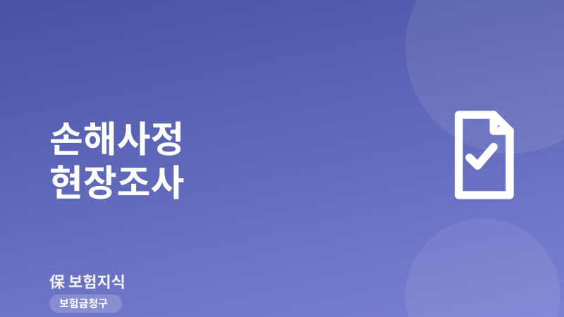
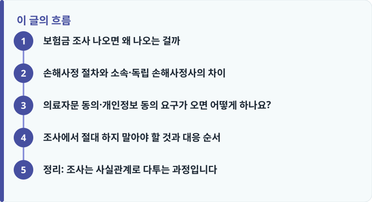

손해사정 현장조사는 고액 청구, 특정 담보, 가입 초기 청구에서 주로 나오며, 사실관계를 확인하려는 절차이지 부지급을 전제한 것이 아닙니다.
의료자문 동의서와 개인정보 동의서, 위임장은 범위와 기간을 확인하고 서명하며, 포괄 동의는 필요한 만큼으로 좁혀야 합니다.
추측성 진술이나 서류 임의 수정은 금물이며, 부지급·삭감 통보를 받으면 이의제기부터 분쟁조정·소송까지 순서대로 대응합니다.
보험금 조사 나오면 왜 나오는 걸까
보험금 손해사정 현장조사가 모든 청구에 나오는 것은 아닙니다. 회사가 조사를 붙이는 경우는 대체로 정해져 있습니다. 첫째는 진단비·후유장해·사망보험금처럼 한 번에 나가는 금액이 큰 고액 청구입니다. 수천만 원 단위가 걸리면 회사는 진단 확정과 사고 경위를 더 꼼꼼히 확인합니다. 둘째는 특정 담보, 예를 들어 재해·상해 사망, 재해 후유장해, 정신질환·한방 관련 담보처럼 판단 여지가 크거나 분쟁이 잦은 담보입니다.
셋째가 가장 흔한데, 가입 초기 청구입니다. 가입 후 1~2년 안에 보험금을 청구하면 회사는 가입 당시 알릴 의무(고지의무)를 제대로 지켰는지를 확인하려 합니다. 이전에 같은 부위를 치료받은 이력이 있는지, 진단 시점이 면책·감액기간과 겹치지는 않는지를 병력 조회로 살피는 것입니다. 즉 조사가 나왔다는 사실 자체가 문제가 있다는 뜻은 아니며, 사실관계를 확인하는 정상적인 절차라고 이해하는 편이 정확합니다.
손해사정 절차와 소속·독립 손해사정사의 차이
청구가 접수되면 회사는 보통 서류 심사를 먼저 하고, 확인이 더 필요하면 손해사정사를 배정합니다. 손해사정사는 사고 경위 확인, 병원 방문, 의무기록 확인, 청구인 면담을 거쳐 손해사정서를 작성하고, 이 결과를 바탕으로 회사가 지급 여부와 금액을 결정합니다. 여기서 짚어야 할 점은 나에게 연락하는 손해사정사가 누구를 위해 일하는가입니다.
회사가 위탁한 손해사정사(보험사 소속 또는 위탁 법인)는 회사에 보고할 자료를 모으는 입장이라, 감액이나 부지급 근거가 될 정보에도 관심을 둡니다. 반대로 청구인이 직접 선임하는 독립 손해사정사는 계약자 편에서 지급 사유와 금액을 다투는 역할을 합니다. 청구 절차 전반이 낯설다면 보험금 청구가 어떻게 진행되는지부터 짚어 두면 조사 단계에서 무엇을 요구받는지 이해하기 쉽습니다. 다만 소액이거나 사실관계가 단순한 건까지 별도 비용을 들여 선임할 필요는 없으니, 사안의 금액과 다툼의 여지를 먼저 가늠하는 것이 좋습니다.

의료자문 동의·개인정보 동의 요구가 오면 어떻게 하나요?
조사 과정에서 청구인은 대개 세 가지 서류에 서명을 요구받습니다. 개인정보 수집·이용 동의서, 의무기록 열람·조회를 위한 위임장, 그리고 의료자문 동의서입니다. 개인정보 동의는 조사에 필요한 병원·기간·목적으로 범위를 좁혀서 서명하는 것이 안전합니다. ‘전 병원, 전 기간’ 식의 포괄 동의는 청구와 무관한 과거 병력까지 회사가 들여다볼 근거가 되므로, 필요한 만큼으로 한정해도 됩니다.
특히 의료자문 동의는 신중해야 합니다. 의료자문은 회사가 지정한 제3의 의사에게 서면 소견을 받는 절차인데, 주치의 진단과 다른 의견이 나오면 감액·부지급의 근거로 쓰이는 경우가 있습니다. 동의는 법적 의무가 아니라 임의 절차이므로, 자문을 맡길 의사·기관과 자문 항목을 밝혀 달라고 요청하고, 납득이 안 되면 동의를 보류할 수 있습니다. 반복되는 자문 요구나 근거 없는 지연은 실제 보험금이 거절·삭감된 사례에서도 흔히 다투는 지점입니다.
작성·검수 기준
이 글은 특정 보험사나 손해사정 법인을 권유·비방하려는 것이 아니라, 손해사정 현장조사가 나왔을 때 청구인이 확인할 일반적인 기준과 대응 순서를 설명하기 위해 작성했습니다. 동의서의 범위, 의료자문 절차, 지급 결정은 개별 약관과 사고 사실관계, 보험회사 심사에 따라 달라질 수 있습니다.
구체적인 대응과 권리 행사는 본인 증권의 약관을 확인하고, 다툼이 생기면 보험금 분쟁이 생겼을 때 대처하는 방법을 함께 참고하는 것이 정확합니다.
조사에서 절대 하지 말아야 할 것과 대응 순서
조사에서 결과를 스스로 나쁘게 만드는 행동이 몇 가지 있습니다. 기억이 흐릿한 사고 경위를 짐작으로 진술하거나, 날짜·증상을 대충 맞춰 말하면 나중에 의무기록과 어긋나 불리하게 쓰입니다. 서류를 유리하게 보이려고 임의로 고치거나 진단서를 다시 받아 문구를 바꾸는 것은 더욱 위험하며, 사기 청구로 오해받을 수 있습니다. 다음 순서로 차분히 대응하는 편이 안전합니다.
- 연락 온 사람이 회사 위탁 손해사정사인지 확인하고, 소속·연락처와 조사 목적을 문서로 남깁니다.
- 면담은 기억나는 사실만 말하고, 모르는 부분은 ‘확인 후 답하겠다’고 하며 추측 진술을 피합니다.
- 동의서·위임장은 병원·기간·목적 범위를 확인해 서명하고, 서명한 서류의 사본을 받아 둡니다.
- 부지급·삭감 통보를 받으면 서면으로 그 사유와 근거 약관 조항을 요청해 확인합니다.
- 납득이 안 되면 회사 민원·이의제기를 거쳐 금융감독원 분쟁조정을 신청하는 절차로, 그래도 해결되지 않으면 소액소송·민사소송을 검토합니다.
정리: 조사는 사실관계로 다투는 과정입니다
손해사정 현장조사는 청구인을 의심하기 위한 절차라기보다, 지급 사유와 금액을 사실관계로 확정하는 과정입니다. 조사가 나오는 이유를 이해하고, 동의서 범위를 확인하며, 추측 진술과 서류 수정을 피하는 것만으로도 불필요한 감액을 줄일 수 있습니다. 부지급이나 삭감을 통보받아도 끝이 아니라, 이의제기와 보험금이 거절되는 대표 사례를 근거로 분쟁조정, 소송까지 단계적으로 다툴 수 있습니다.
다른 보험 정보 글이 궁금하다면 보험지식 블로그에서 이어 읽어 보세요. 가입 전에는 반드시 약관과 상품설명서를 확인하는 것이 가장 안전한 방법입니다.